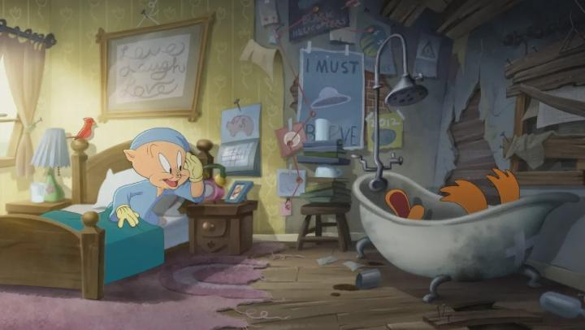

Isn't it fun when a movie releases, whose development is just as interesting (or moreso) than the movie itself?Let's set the scene: a great pandemic hits the globe. Digital streaming, led by Netflix, is pushing television, movie theatres, and home video releases to their deaths. The time is ripe for every entertainment company to launch their own competing streaming sites, featuring their catalog of shows and movies. To further encourage subscribers, brand new movies should be made to run exclusively on these services. So every company with skin in the game starts greenlighting projects that, frankly, shouldn't have been greenlit, for if they didn't make their money back in the theatre, they could at least strengthen the value of the streaming subscription.... but about 5 years later, it's clear that this was a bad business move. Warner Bros and their HBO Max service wasn't making the profits they expected. Facing massive financial issues, they discover a new strategy: to take completed movies, just months before expected releases, and cancel them outright to offset other losses in their taxes. It's a move that makes virtually no sense, unless the expected profits were less than the expected marketing costs alone. Major movies like "Batgirl," "Coyote vs Acme," and "The Day the Earth Blew Up - A Looney Tunes Movie" were all subject to being shelved, after the work was already done. While it seems like a bizarre move... admittedly, these listed movies probably WOULD have made less in profit than the necessary marketing costs. From the premises, these all seemed exactly like the movies you'd expect to see on television or direct-to-video, not a prestige theatrical experience. But regardless, it was a slap in the face to fans who would have liked to see these, and a harder slap on the hard-working artists involved - the loss in confidence from every director in America will probably spell the end of Warner Bros in the not-so-far future. But regarding "The Day the Earth Blew Up," it was miraculously saved by a tiny distributor, Ketchup Entertainment, and would be shown at animation festivals, and finally, in movie theatres nationwide. Yes, Warner Bros. themselves didn't have the confidence to release their own movie featuring their most important brand, the Looney Tunes, but at least we got this one way or another.It's also notable that this is the first fully original theatrical 2D animated film featuring the Tunes. Yes, they've had live-action hybrids ("Space Jam," "Back in Action," and "Space Jam 2"), and cheaply made repackage-films of their old shorts, and a few direct-to-video movies. But never a movie like "The Day the Earth Blew Up." If you absolutely love the Looney Tunes, and love 2D animation, you'd wonder why this never happened before (we never got a full-length theatrical Mickey Mouse film either for that matter). And for you, this might be dream come true, as the animation community specifically was enthusiastic about "Blew Up" from the beginning. But for a wider audience... well..."Blew Up" gives us an alternate origin story to Daffy Duck and Porky Pig. They're found alone by the kindly Farmer Jim, who raises them until they've grown, and then gives him the farm as their home. Years later as adults, they're at risk of losing their beloved home (due to a mysterious asteroid that struck the roof the night before). Forced to find jobs for the first time, they eventually find work at the local chewing gum factory, with help from Petunia Pig. But things go awry when an alien uses the gum factory to enact a plan for world domination, and only Daffy, Porky and Petunia can save the day!The plot doesn't stray far from its zany, looney roots, not even to add emotional heft. Right away, slapstick and puns are a-plenty, with a homage and theming to classic "it came from outer space" horror movies. Farmer Jim's short appearance in the film makes him an instant classic character for the Looney IP. There's a brief, slightly dark explanation to how Porky got his classic stutter. Action is classic cartoon violence, no more, no less. The emotional anchor of the plot, if there is one, is Porky and Daffy's relationship, where Daffy usually goes off the rails and Porky tries to keep him under control, but this isn't played much harder than you'd expect within a regular Tunes short. And that's all great! You'd expect nothing less from a Looney Tunes film, after all. Daffy, Porky, and Petunia are the only Tunes that star in the film. I didn't know what to expect from Petunia's role, since she never had a strong definition in previous shorts, but aside from being a love-interest to Porky, she's given a unique zaniness of her own that fits perfectly (her mission in the movie is to find the perfect new chewing gum flavour, and her tastes are very... experimental). The rest of the world is comprised of humans, that look a lot like human designs from the 2020 Animaniacs reboot... which is to say they're all hideously ugly, as if a stylized political cartoonist had to adapt their work to Powerpoint clip-art for simplier animation (which is probably exactly the design philosophy behind the scenes). Thankfully, the movie doesn't focus for too long on them, and the three Tunes themselves look great, mostly taken from the modern designs of the 2020 HBO Looney Tuens shorts, but still totally recognizable to the decades of shorts that came before.  But some of those new 2020 shorts were a little darker than expected... is this still an appropriate movie for kids? The new alien villain is creepy and gives Marvin Martian a run for his money, but he quickly becomes another spot of laughter as his plans begin to fall. Some of his monster creations, and how he takes over people's brains, are genuinely scary and a interesting bit of character design, but not outside the realm of what young kids can tolerate. None of the jokes seemed too adult, and the "cartoon violence" feels more cartoonish and less violent. I was impressed with this tricky balance the movie pulled off, to still be a kids' movie but also be interesting or funny to parents, and it works better than some of those new shorts did. "The Day The Earth Blew Up" is a very funny movie. But the jokes are so rapid, that not all of them are given the chance to breathe. More than once, there would be a quick visual gag or sentence, that my brain would catch up on seconds after it had passed, by which point three more jokes appeared. I take this as a true testiment to how masterful the old Looney Tunes shorts were, where every single joke could be registered. Or perhaps a sign of modern times, where ADHD-addled kids, addicted to 5-second video shorts of brain-rot content bookended by advertisements, and prone to scroll past anything longer than five seconds to read or watch, simply don't have the time or attention-spans to take in a joke longer than that. Or a sign of difficult directing choices, where the total runtime had to be cut, but they couldn't bare to cut some of the jokes for the sake of the film. Or just a sign that my brain is getting older or slower. In whatever case, it's a fast-paced movie. And could this have been just a short instead of a feature? Yes, but at no point does it feel like the film is too long, or any scene is unnecessary. This all sounds like a win, but I won't sugar-coat it... this should have been a direct-to-video movie. Or a television special. Or maybe, just maybe... a streaming special on Max. There's nothing spectacular about "The Day The Earth Blew Up" as a theatrical experience. In terms of rendering quality, the Tunes looked better in "Space Jam" and "Back In Action" (and to a lesser extent, in "Space Jam 2"), compared to this extremely clean, flat coloured, vector-art Toom-Boom-software animation. For most people, even reported Looney Tunes fans, this is just a fine movie, and best meant to fill your child's afternoon. Only the most obsessive of Looney and cartoon and animation fans probably even knew this movie existed when it released. And the movie knows this; there's a few fourth-wall-breaking jokes, and hand-drawn sketches in the credits, acknowleding the animators and the characters' legacy, and even the tumultuous journey to release. And this all helps to make this the best 2D-animated theatrical film the US has produced in over a decade, especially to the opinion of me, who pays attention to the industry. But that's a low bar with little competition. What inspired me to collect and watch as many 2D animated films as I could, was witnessing the end of them in real time. I wouldn't have guessed that their slow return from American productions would be from these extremely cartoonish films, but here we are. "The Day The Earth Blew Up - A Looney Tunes Movie" is the best example representing this right now. And how it released and performed at the box office says a lot about the state of 2D animation in the USA: it's a small ember barely supported by a small but passionate base that cares.
- "Ani" More reviews can be found at : https://2danicritic.github.io/ Previous review: review_The_Concierge Next review: review_The_Deer_King